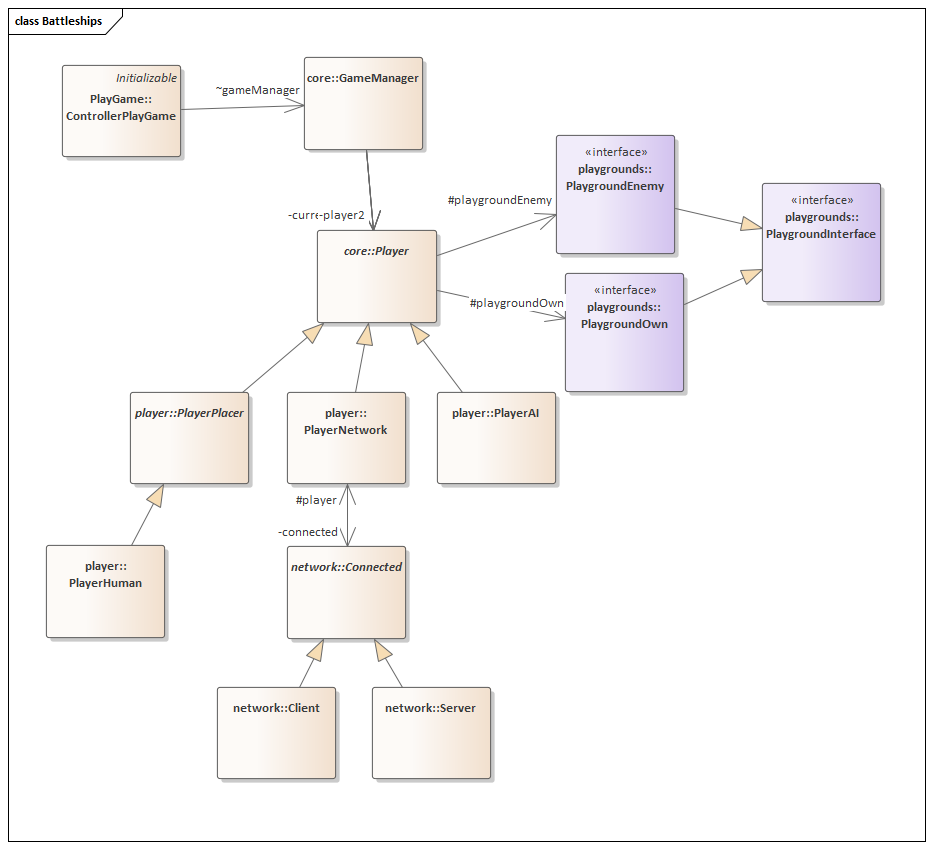

Battleships
Battleships is an implementation of the board game Battleships.
Created by: Lukas Mendel, Julian Sobott, Julien Wagler, Josua Weiß
Some of the features are:
- Play vs an AI
- Play over the network
- Simulate AI vs AI
- 3 different AI difficulty levels
- Cheatmode: Get tips where to shoot
